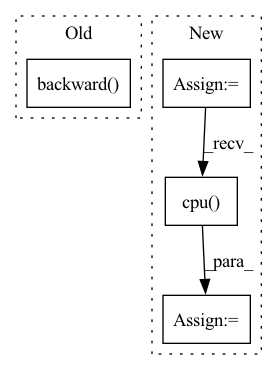

Pattern ID :40530

Before Change
// loss_Gpl = (gen_img[:, 0, 0, 0] * 0 + loss_Gpl).mean() * float(gain)
// loss_numpy["loss_Gpl"] = loss_Gpl.cpu().detach().numpy()
// loss_Gpl.backward() // 咩酱：gain即上文提到的这个阶段的训练间隔。
(gen_img[:, 0, 0, 0] * 0 + loss_Gpl).mean().mul(gain).backward()
// Dmain: Minimize logits for generated images.
// loss3 = 0.0
if do_Dmain:
After Change
// print("ddd=%.6f" % ddd)
loss_Gmain = torch.nn.functional.softplus(-gen_logits) // -log(sigmoid(gen_logits))
loss_Gmain = loss_Gmain.mean()
loss_numpy["loss_Gmain"] = loss_Gmain.cpu().detach().numpy()
loss_G = loss_Gmain
loss_G = loss_G * float(gain)
In pattern: SUPERPATTERN
Frequency: 3
Non-data size: 4
Instances
Fragment ID: 114761695
Project Name: miemie2013/miemiegan
Commit Name: fbc8738996ce75111be885ba7ac313d85969a2b8
Time: 2022-02-25
Author: 53960695+miemie2013@users.noreply.github.com
File Name: mmgan/models/architectures/styleganv2ada_model.py
M Class Name: StyleGANv2ADAModel
N Class Name: StyleGANv2ADAModel
M Method Name: accumulate_gradients(8)
N Method Name: accumulate_gradients(8)
M Parent Class: torch.nn.Module
N Parent Class: torch.nn.Module
M File Name: mmgan/models/architectures/styleganv2ada_model.py
N File Name: mmgan/models/architectures/styleganv2ada_model.py
M Start Line: 138
M End Line: 260
N Start Line: 143
N End Line: 262
'>
Before Change
mix_data[x]["rdf_range"],
f"{model_path}/x_{x}_{str(i).zfill(3)}_rdf.pdf")
loss.backward()
optimizer.step()
optimizer.zero_grad()
print(loss.item())
After Change
all_rdf11 = []
all_rdf12 = []
all_rdf22 = []
for epoch in range(params["update_epoch"]):
for x in params["trainx"]:
tau = params["nsteps"]
v_t, q_t, pv_t = train_sys[x].sim.simulate(steps=tau, dt=0.005, frequency=tau)
// check for NaN
if torch.isnan(q_t.reshape(-1)).sum().item() > 0:
print("encounter NaN")
return 10.0, True
_, _, sim_rdf11 = train_sys[x].rdf11(q_t)
_, _, sim_rdf12 = train_sys[x].rdf12(q_t)
_, _, sim_rdf22 = train_sys[x].rdf22(q_t)
loss_ = (sim_rdf11 - torch.Tensor(train_sys[x].target_rdf11).to(device) ).pow(2).mean() + \
(sim_rdf12 - torch.Tensor(train_sys[x].target_rdf12).to(device) ).pow(2).mean() + \
(sim_rdf22 - torch.Tensor(train_sys[x].target_rdf22).to(device) ).pow(2).mean()
all_rdf11.append(sim_rdf11)
all_rdf12.append(sim_rdf12)
all_rdf22.append(sim_rdf22)
loss_.backward()
loss += loss_.item()
optimizer.step()
optimizer.zero_grad()
if i % 5 == 0:
mean_all_rdf11 = torch.stack(all_rdf11).detach().cpu().mean(0)
mean_all_rdf12 = torch.stack(all_rdf12).detach().cpu().mean(0)
mean_all_rdf22 = torch.stack(all_rdf22).detach().cpu().mean(0)
plot_pairs(train_sys[x].sim, pair11, pair12, pair22, fn=f"{model_path}/x_{x}_{str(i).zfill(3)}_pot.pdf")
plot_sim_rdfs(mean_all_rdf11, mean_all_rdf12, mean_all_rdf22,
'>
Fragment ID: 114761702
Project Name: torchmd/mdgrad
Commit Name: 4a43676cd6950ce8bf34276d9c4fefcd081b35d7
Time: 2022-01-28
Author: wwj@mit.edu
File Name: scripts/fit_mix.py
M Class Name: AnonimousClass
N Class Name: AnonimousClass
M Method Name: run_mix(1)
N Method Name: run_mix(1)
M Parent Class:
N Parent Class:
M File Name: scripts/fit_mix.py
N File Name: scripts/fit_mix.py
M Start Line: 199
M End Line: 230
N Start Line: 202
N End Line: 250
'>
Before Change
raise NotImplementedError
policy_loss_value = policy_loss.detach().cpu().numpy()
self.policy_optimizer.zero_grad()
policy_loss.backward()
self.policy_optimizer.step()
self.tot_update_count += 1
After Change
policy_loss_value = policy_loss.detach().cpu().numpy()
//entropy loss
entropy_loss = -torch.mean(dist_entropy)
entropy_loss_value = entropy_loss.detach().cpu().numpy()
tot_loss = v_loss + entropy_loss + policy_loss
self.policy_optimizer.zero_grad()
'>
Fragment ID: 114761699
Project Name: x35f/unstable_baselines
Commit Name: 5af9f89c6d399a424b451a524af66c97ab900df8
Time: 2021-03-30
Author: 1621322691@qq.com
File Name: ppo/model.py
M Class Name: PPOAgent
N Class Name: PPOAgent
M Method Name: update(2)
N Method Name: update(2)
M Parent Class: BaseAgent,torch.nn.Module
N Parent Class: BaseAgent,torch.nn.Module
M File Name: ppo/model.py
N File Name: ppo/model.py
M Start Line: 78
M End Line: 118
N Start Line: 79
N End Line: 125